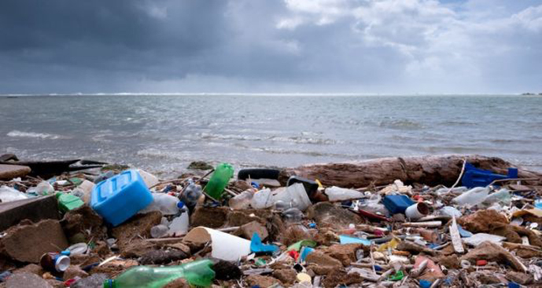

What you can do to help
- Change Your Lightbulbs
Checking for your lightbulb and replacing them with Energy Star label from the Environmental Protection Agency This can help you save your money and the bulb uses 75 percent less energy and lasts about 10 to 50 times longer.This reduces the Greenhouse gas emission by about $130,000
- Carrying Your Own Bottle
Alot of plastic bottles are being thrown away in landfll. 2.5 million bottles plastic beverage bottles every year.

Carrying your own bottles will reduce what is being put in the ocean and land.
- Speaking Up
Speaking up can do alot change and tell others what they can do to help with climate change. If there isn't change,temperature will still rise up and can affect us and animals.
- Eat less meat
Producing beef, lamb, cheese creates some of the highest amounts of greenhouse gas emissions, s cutting down demand will help.
How can we speak up
What you can do to speak up is talk to friends, family, workers in your job about what is going on. Vote in every way you can and turn up at the voting booth, and make the right choice to combat climate change – national elections are the obvious one, but council elections, mayoral elections, or even electing the chair of your chess club could have a significant impact on the environment. When people don't know to read artcles that are in english they wont know what is happening.Their should be articles that have many different languages so they can unnderstand.People may not know what climate change is but they know it is a imapct and we could tell them how they can be prepare to adpat to the impact.